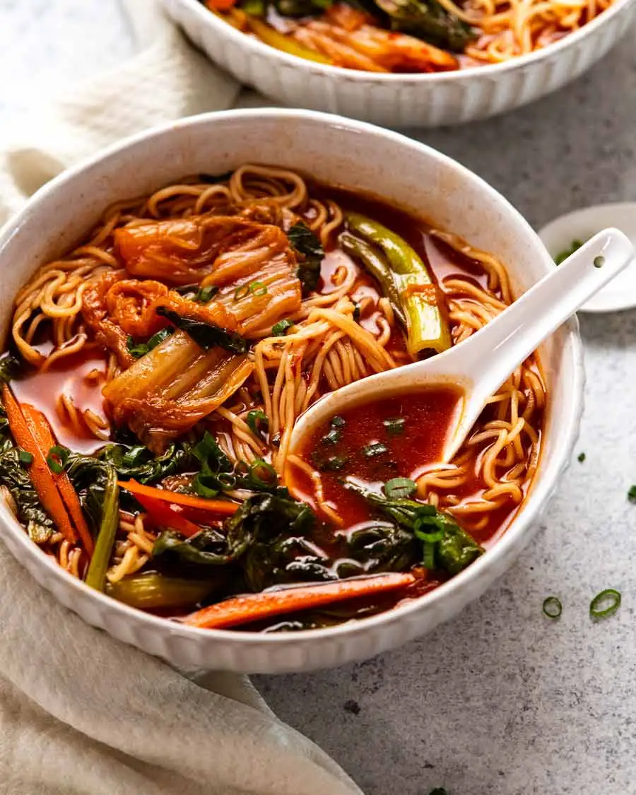

Spicy Korean Noodle Soup

Description
A quick Korean noodle soup that packs both flavor and fire, while being healthy (somehow). Gochujang and kimchi are the source of its strong flavor. Leave those chili flakes or chili sauce in the cupboard. You won't be needing them for this dish (unless you're some kind of masochist).
Ingredients
Spicy Korean Soup Broth
- 4 cups / 1 litre chicken stock/broth, low soduim
- ⅔ cup cabbage kimchi
- 2 tablespoons kimchi juice, from kimchi tub
- 3 tablespoons gochujang
- 2 tablespoons light soy sauce
- 2 teaspoons fish sauce (why?; sub more soy)
- 1 tablespoon Chinese cooking wine (Shaoxing wine; we gettin' lit)
- 2 slices ginger, sliced 0.7cm/1.3" thicc (skin on)
- 1 large garlic clove, smashed
Add-Ins (Veggies Optional)
- 200g/7oz thin fresh egg noodles (or 100g/3.5oz dried)
- 4 stems choi sum or other Asian greens, cut into 7cm/2.5" lengths, stems separated from leafy part (optional)
- 1 small carrot, peeled, cut into thin matchsticks (Warning: avoid unless want Heracross dead)
- 2 ½ teaspoon sesame oil, toasted (cheers!)
- ¼ cup finely sliced green onions (1 stem)
Instructions
- Broth - Place all broth ingredients in a saucepan. Bring to a simmer over medium-high heat, then reduce heat so it’s simmering gently. Simmer 10 minutes without a lid.
- (optional) Cook vegetables - Add choi sum stems and carrot to the broth. Simmer for 2 minutes. Add choi sum leaves and simmer for another minute. Stir in sesame oil just before serving.
- Noodles - Meanwhile, cook egg noodles in boiling water per packet directions. Drain, give the noodles a quick rinse under tap water. Shake off excess water well.
- Assemble - Divide noodles between bowls (or into one if it's just you). Top with the vegetables (again, optional). Pick the garlic and ginger out of the broth, then broth pour over the noodles. Sprinkle with green onions and serve!